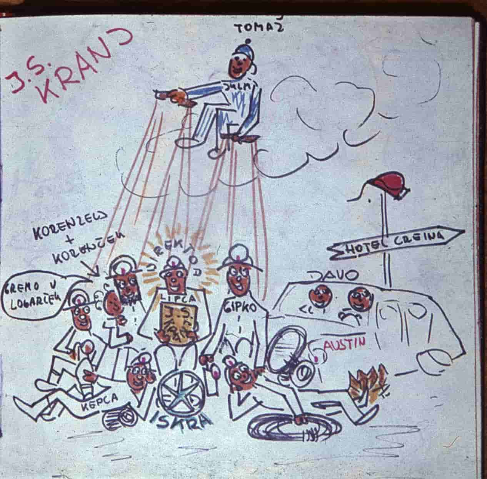

History:
Begginings of caving at Gorenjska go back to the seconf half of the 20th century. The first that wanted to know more in Kranjs surroundings were members of the Natural science club from Kranjs first gymnasium, who helped Janez Gantar with exploration of the Arneževa Luknja in 1954 in Duplje near Naklo. Those were explorations where they still wore painted Itallian army helmets and lit their way with carbide lanterns.

The first exploration notes in Kranjs surroundings were published by Andrej Triler in Gorenjski Glas in the year 1954. It was published under the name -Po podzemeljskem svetu-. In these articleshe mentions: Kevdrc on Lubniku, Dobruško jamo at Smlednik, Jeralovo brezno, Krištanov brezn and Lovšinovo brezno in Zabukovje, Bidovčevo jamo, Miklovo brezno-6 meters in depth, Turkovo jamo in Rovte, Lipniško and Dežman cave, Vaznikarjevo zijalko on Goriče, and two caves in Letence-Veliki pekel and Mali pekel. A year later he published explorations of Arnež cave in Zgornje Duplje, a cave in Zadraga and Lebniščica at Strhinj. There are only two maps still preserved from this period, both drawn by Rado Okorn. Those are maps of Previs nad Pelnarjem-24.1. 1955 and Jamo nad Podnartom-15.8. 1955.Rado Okorn has also drawn many cave animals, all of his paintings are from 1955.

In the year 1954 a caving section was formed inside PLaninsko društvo Kranj. Marko Aljančič talks about this time in Planinski vestnik in 1960 under the name >>O jamarstvu na Gorenjskem<< (About caving at Gorenjska in eng.). The section formed by Marko Aljančič gone quiet in 1960, but was reborn in 1963 by Karel Lipovec, together with 8 other members. They changed their name to Društvo za raziskovanje jam Kranj(Caving club Kranj). Other members were: Franci Ciprle, Tone Čufar, Jože Kepic, Rafo Rajgelj, Jože Potočnik, Jože Kepic, in Davorin Preisinger (Davo). At 1.3.1965 more people joined the section. Those were Alojz Rode, Jože Osterman, Miro Preisinger and Franc Luznar.
 popr.jpg)
Tomaž PLanina, a member of Ljubljana matica club also greatly contributed to the club. He explored many caves with Davorin Preisinger. Members of DZRJK had already been working together with todays JZS, which took care of training cavers in Slovenia. Caving clubs (Železničar Ljubljana, Ljubljana Matica, Jamarska sekcija PD Kranj...) have helped eachother a lot in past times, this is why we come across a lot of inter-club explorations.
In the seventies a need for an independet club came up. They made a deal with Planinsko društvo Kranj, and became independet on 16.6.1972. They started operating as DZRJ Kranj.

Today the club is part of Caving Association of Slovenia(JZS).